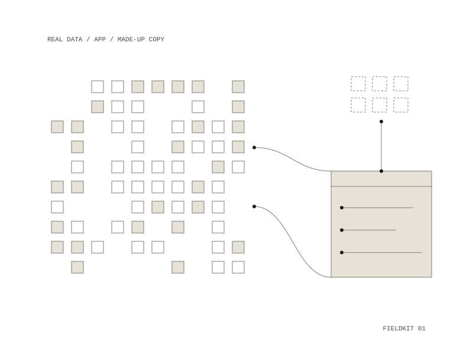

Fieldkit
A kit for making apps over your own research data by describing them in plain words
Make your own apps for your research by describing what you want in plain words. A model writes the app; it only ever sees a made-up copy of the data, and the app that runs on the real data loads nothing from the internet but map tiles.

Asking for an app
A new project starts with a simple notes browser. Bring my data takes a FileMaker export, spreadsheets in .csv or .xlsx, or notes and transcripts in .docx, .txt or .md. Requests are typed in ordinary words, such as "Show my notes on a timeline by month" or "Put the interview locations on a map", and the app beside them updates; Undo last change takes a step back. A brief in your own words is followed with every request, and screenshots, sketches on paper or links for inspiration are each turned into a written description that can be edited. Export app makes a folder that opens the app with a double-click on a Mac or a Windows computer, with no data, the made-up sample, or the real data inside.
Where the data goes
When data comes in, fieldkit makes a made-up copy with the same shape: the same columns, the same number of notes, the same headings, but invented words, shifted dates and fake locations. The model sees only that copy, the app's code, and the table and column names. The tools it is given cannot reach the real files. Open with my real data runs the app in your own browser, and nothing from that tab goes back to the model. If an app reads the real notes with a model, for example to summarise an interview, that goes only to a model running on your own computer.
How it holds
The model may read only the app and the sample folders and write only the app folder, and it has no shell. No word longer than three letters from the real data may appear in the sample. The app runs on three separate loopback servers (main, sample and real), so the browser's same-origin rules keep real data out of the chat. A canary test checks that the real data never reaches the model. Learners need no admin rights: the launcher sets itself up inside the kit folder, because many university machines block the usual installers.
- Year
- 2026
- Medium
- teaching / software / data
- Runs on
- Mac, started with a double-click; a Windows launcher is included
- In
- FileMaker exports, spreadsheets, notes and transcripts
- Repository: private